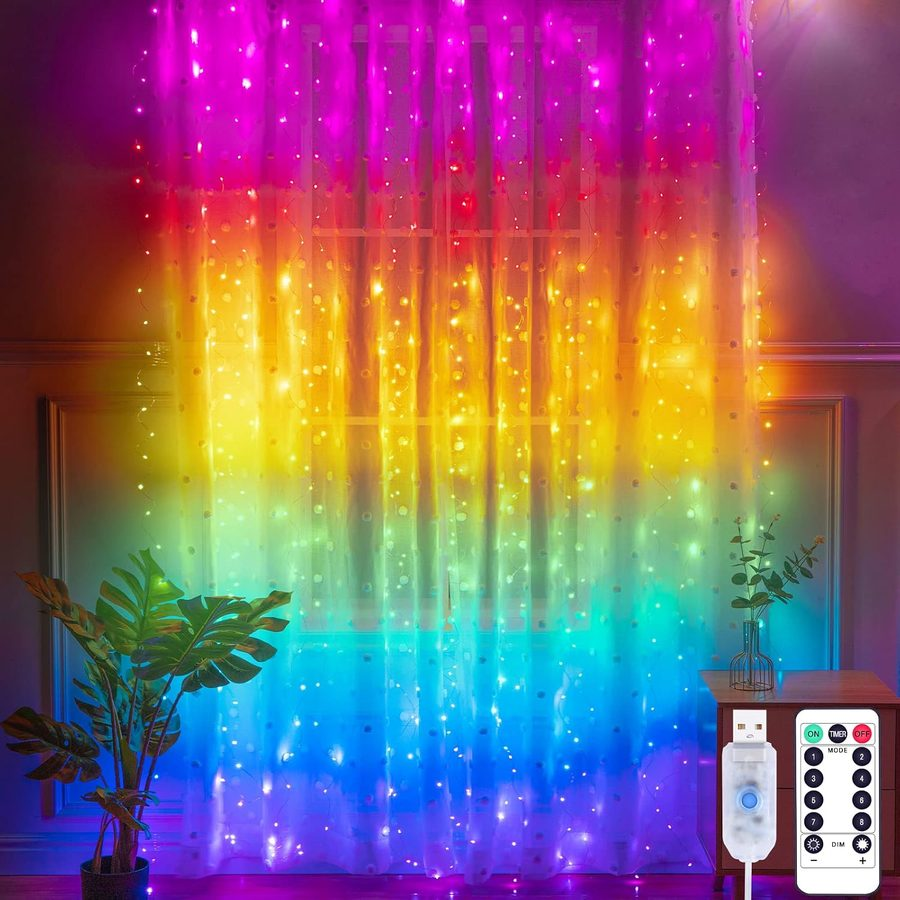
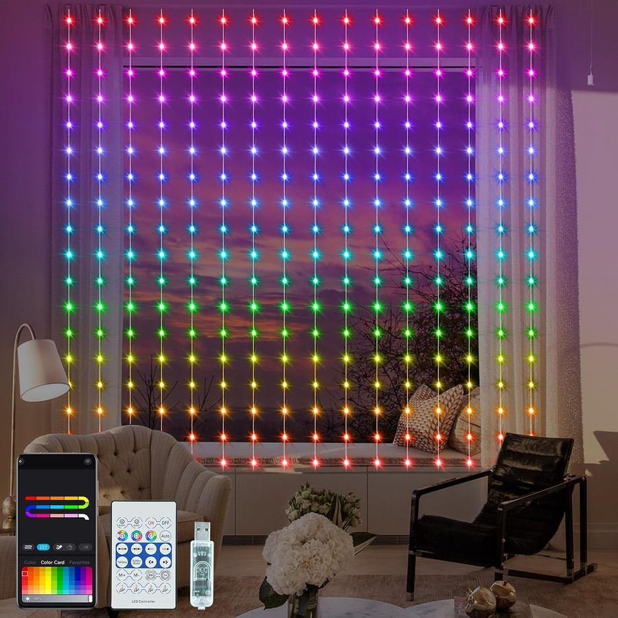
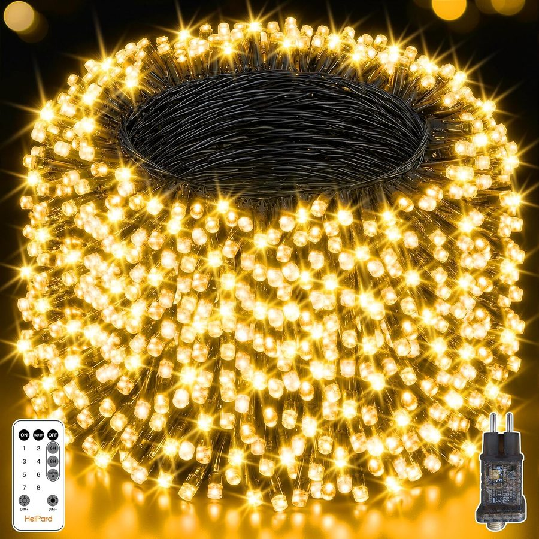

Yizhet 3 × 3 m
Mando con temporizador 6/18, memoria y atenuación, más interruptor USB. Cortina de colores, 300 LED.
15,99 €Amazon.es · 15 nov 2026, hacia las 00:45 (hora de Madrid)
Entrega anunciada el jueves 19 de noviembre.

Navidad y Reyes 2026 · Comparativa
Precios y plazos del 15 de noviembre de 2026, hacia las 00:45 (hora de Madrid)
Imagen ilustrativa de ambiente navideño.
El título habla de «las mejores», y por eso empezamos por los criterios. No hay un ganador único: depende de si te importa el brillo regulable, un temporizador con horas claras, una app además del mando, o llegar a tiempo antes del 24.
Aviso: En calidad de Afiliado de Amazon, obtenemos ingresos por las compras adscritas que cumplen los requisitos aplicables. Los enlaces a otras tiendas no son de afiliado. Los precios y los plazos de entrega los consultamos el 15 de noviembre de 2026, hacia las 00:45 (hora de Madrid). El precio final y la fecha de entrega son los que marque cada tienda al comprar.
Comprueba la fecha de entrega antes de comprar; algunos envíos tardan más en Navidad.
Solo entran productos cuya ficha declara un mando físico. El control por aplicación o por Alexa no sustituye a ese dato. Además miramos:
No hemos incluido la Twinkly de 6 m en la tabla: se controla con la app y con la voz, y su ficha no declara mando físico. Está en la página de iluminación, apartada con claridad. Tampoco entra una cortina ANSIO que vimos el mismo día, porque la oferta destacada era de segunda mano.
| Luz | Qué declara el mando | Reserva / extra | Alimentación y uso | Precio | Entrega anunciada |
|---|---|---|---|---|---|
| Yizhet 3 × 3 m | Encendido, modos, atenuación, temporizador (6 h encendida / 18 h apagada) y memoria. | Interruptor en el puerto USB. | USB. Alambre IP65; el puerto USB no se declara impermeable. | 15,99 € | 19 de noviembre |
| ZAIYW 2,4 × 1,8 m | Control remoto y app (colores, brillo, velocidad, temporizador). | App ZENGGE y botón USB. | USB. Cortina IP68; el USB debe mantenerse seco. | 26,99 € | 19 de noviembre |
| HeiPard 100 m | 8 modos, de luz fija a efectos. Temporizador y memoria en la ficha; sin horas exactas en los puntos principales. | Sin dato de app. | Enchufe. IP44, zonas exteriores protegidas; proteger el enchufe. | 45,99 € | 20 de noviembre |
| Wixwarmi 100 m | Brillo, temporizador y 8 modos. Sin horas exactas del temporizador en los puntos principales. | Sin dato de app. | Enchufe, transformador 31 V / 6 W. IP44 en guirnalda y controlador. | 49,99 € | 20 de noviembre |
| Pealeaf 3 × 2 m | Mando para colores, brillo, efectos y velocidad. La app sirve para diseños y textos. | App Bluetooth, modo musical, temporizador y memoria. | USB. Hilos IP65; proteger la conexión USB. | 58,99 € | 10 de diciembre |
Según estos criterios, la Yizhet es la que deja más claro el ciclo del temporizador y además tiene un interruptor de reserva, por 15,99 €. Si lo que buscas es una guirnalda larga de enchufe, la Wixwarmi es la que declara de forma más explícita el ajuste de brillo en el mando; la HeiPard queda un poco por debajo en precio y también declara mando, temporizador y memoria. La Pealeaf añade diseños desde la app, pero llega más tarde y apenas tiene opiniones.
Las fichas completas están en la página de iluminación, para no repetirlas.

Mando con temporizador 6/18, memoria y atenuación, más interruptor USB. Cortina de colores, 300 LED.
15,99 €Amazon.es · 15 nov 2026, hacia las 00:45 (hora de Madrid)
Entrega anunciada el jueves 19 de noviembre.

Mando y app ZENGGE, 144 LED RGB, modo musical. El USB debe mantenerse seco.
26,99 €Amazon.es · 15 nov 2026, hacia las 00:45 (hora de Madrid)
Entrega anunciada el jueves 19 de noviembre.

Mando con 8 modos, temporizador y memoria. Enchufe e IP44. No detalla las horas del temporizador.
45,99 €Amazon.es · 15 nov 2026, hacia las 00:45 (hora de Madrid)
Entrega anunciada el viernes 20 de noviembre.

El mando declara brillo, temporizador y 8 modos. Transformador de 31 V. También IP44.
49,99 €Amazon.es · 15 nov 2026, hacia las 00:45 (hora de Madrid)
Entrega anunciada el viernes 20 de noviembre.

App para diseños y mando para el día a día. Entrega anunciada el 10 de diciembre; una sola opinión (2,0).
58,99 €Amazon.es · 15 nov 2026, hacia las 00:45 (hora de Madrid)
Entrega anunciada el jueves 10 de diciembre.